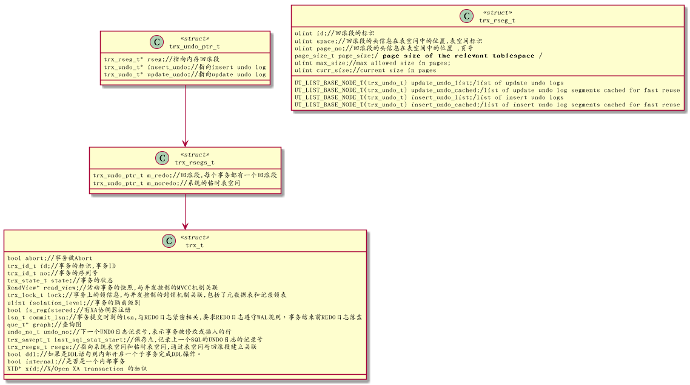

Table of Contents
1 10.2 事务管理基础
1.1 事务状态
以上文件位于trx0types.h
1.2 表示事务的数据结构
事务的数据结构中,把事务的属性如隔离级别和事务状态,与并发相关的锁如MVCC机制的快照隔离,UNDO日志关联起来

- 表示事务的数据结构是trxt,在事务的结构体中,与并发控制紧密相关的是"ReadView *readview" 和"trxlockt lock"
- 与事务管理相关的是“trxstatet state”或"ulint isolationlevel"等
- 与事务管理相关的另外一个主要结构体成员是"trxsaveptt lastsqlstatstart",即事务在执行过程中，通过保存点机制使用SQL语句的失败不会导致整个事务回滚，这如同使用栈(但不是栈，可以把一串UNDO日志视为一个逻辑栈)
- 与事务回滚相关的是"trxrsegst rsegs"->"trxundoptrtmredo/mnoredo" ->"trxrsegt* rseg"
1.3 redo日志
1.3.1 数据结构
redo日志作用:
- 一是可以作为故障崩溃的时候，做系统恢复使用.以保证已经提交的事务的原子性和持久性。
- 二是可以作为流的方式实现数据同步和复制的功能(尽管Mysql数据同步和复制是使用binlog)
1.3.2 REDO日志文件的管理方式
REDO日志从缓存区中被刷出后，保存在日志文件组(group),每个日志文件组至少有两个REDO日志文件，iblogfile0,iblogfile1的文件,文件个数可以通过innodblogfilesingroup参数调节 每个REDO日志文件大小相同，当文件满了的时候 ,会自动切换到下个日志文件以循环使 每个REDO日志文件大小相同，当文件满了的时候 ,会自动切换到下个日志文件以循环使用.
1.3.3 REDO日志与binlog日志的区别
| 比较项 | REDO日志 | binglog日志 |
|---|---|---|
| 记录范围 | 记录事务操作过程中产生的事务日志` | 记录Mysql所有存储引擎日志记录 |
| 记录内容 | 记录的关于每个页的更改物理情况 | 文件记录格式可以为STATEMENT或ROW |
| 写入的时间 | 事务进行的过程中，不断有REDO日志被写入到REDO日志文件中 | 事务提交前进行记录 |
| 记录作用 | 系统故障做恢复，物理复制 | 逻辑复制 |
1.4 Mini-Transaction
Mini Transaction用于实现事务的执行，REDO日志的写入,页数据刷盘,故障恢复时的页恢复。REDO日志需要基于Mini Transaction
Mini Transaction的数据结构mtrt表示 ,主要标识日志相关信息以及相关锁信息.
Mini Transaction是InnoDB事务处理的最核心部分,是管理引擎内部操作基础